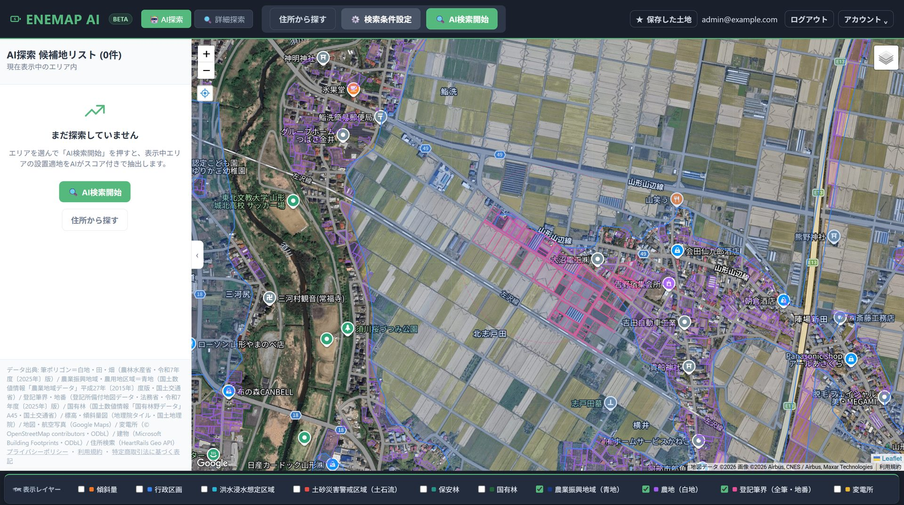

傾斜角、民家からの離隔、接道状況。これまでは人が数日かけて調べていた条件を、
EneMap AIなら全国のGISデータから瞬時にスクリーニングします。

実際の画面 — 農地区分や森林規制・変電所をワンマップに重ね、AIが候補地リストを自動生成
系統用蓄電池の事業用地探しには、特有の厳しい条件とアナログな苦労が伴います。
「ここは平坦か？」「家は近いか？」担当者が1件ずつ地図を見て確認。膨大な時間が奪われ、本来の交渉業務が進みません。
苦労して見つけた土地も、いざ現地調査に行くと「道幅が狭くてクレーン車が入らない」と判明し、コストと時間が無駄に。
蓄電池事業特有の悩みである「PCSの騒音」。民家との距離（50m以上など）を正確に測れず、近隣トラブルのリスクを抱えます。
高度なGISデータとAIアルゴリズムが、条件に合致する「本物の」候補地だけを抽出します。
国土地理院の標高データ（DEM）を活用し、対象エリアの平均傾斜角を自動算出。「5度以下（平坦）」など、造成工事が不要な土地だけをピンポイントで探し出します。
地図上の建物ポリゴン・道路ポリゴンと対象地の距離を計算。「民家から50m以上離れている」「道路から10m以内（接道している）」といった厳しい条件を満たす土地のみをフィルタリングします。
農地区分（青地・白地）、国有林・保安林、変電所の位置。これまで複数のマップやPDFを行き来して照合していた公開データを、すべて1枚の地図に重ねて表示。座標を見失うことなく、その場で開発可否を判断できます。
機能に差はありません。どのプランでも、すべての機能が使えます。
全プラン共通 — すべての機能が使えます
適地条件・農地転用・離隔距離など、用地開発でよく聞かれる疑問にお答えします。
御社が現在探している「ターゲットエリア」をヒアリングし、実際のデータを用いた無料デモを実施します。